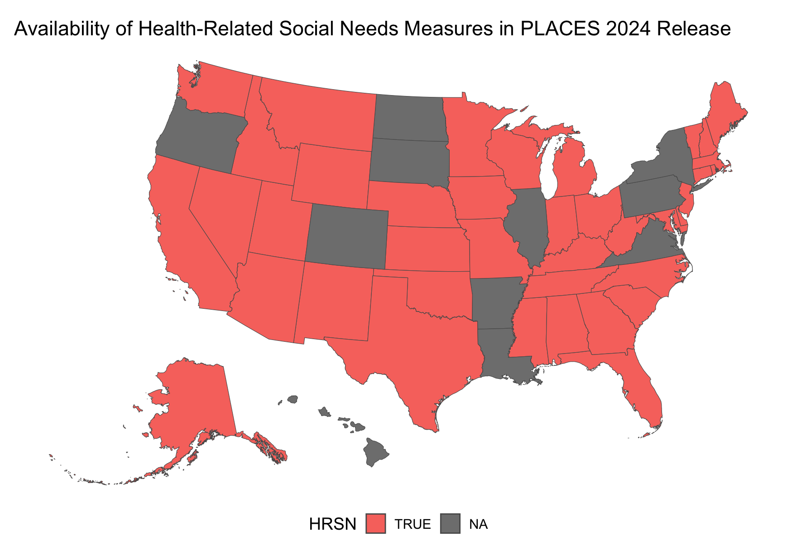

Code
# install.packages("CDCPLACES")
# install.packges("tidyverse")
library(CDCPLACES)
library(tidyverse)2024-09-19
This is part of the CDCPLACES blog series. To view the other posts in this series click here.
This brief blog post explains the new additions to CDCPLACES 1.1.8. This update provides a few new features:
Updated 2024 release data, including several new measures under the health-related social needs category
Two new arguments to help filter your data, cat and age_adjust
The ability to query Zip Code Tabulation Areas (ZCTAs)
Improved functionality when querying counties with the same name across different states
In addition to these features, CDCPLACES now depends on yyjsonr instead of jsonlite. Originally, the get_places function included a step to clean the returned geolocation variable (essentially a centroid of the geography queried). This step was removed as it was computationally intensive on larger queries and unncessary given the support for shapefiles with the geometry argument. These changes drastically improve the speed of the package.
To begin, we will load the required packages.
# install.packages("CDCPLACES")
# install.packges("tidyverse")
library(CDCPLACES)
library(tidyverse)With the 2024 release of the PLACES data, the default option for the release argument in get_places has been updated to “2024”. You can find all the details of these updated data in the release notes.
An exciting addition to the PLACES data are the new health-related social needs variables. These include: social isolation, food stamps, food insecurity, housing insecurity, utility services threat, transportation barriers, and lack of social and emotional support. These measures are only available in 39 states and the District of Columbia (DC).

You can view these measures by calling get_dictionary. The category ID for these new measures is “SOCLNEED”.
get_dictionary() |> filter(categoryid == "SOCLNEED") |> as_tibble()Some minor quality of life improvements are introduced with the new arguments cat and age_adjust.
We can filter our results to returns a set of measures by category ID.
get_places(geography = "county",
state = "AL",
cat = "SOCLNEED") |> as_tibble()If a measure is provided as well as a category, the category will override it. A message is displayed in the console noting this when it occurs.
To return only the age-adjusted prevalence rates, we can set the argument age_adjust to TRUE. Age-adjusted rates are only available at the county level.
get_places(geography = "county",
state = "AL",
cat = "SOCLNEED",
age_adjust = TRUE) |> as_tibble()A new option has been added to query ZCTAs. To do this, simply set the geography argument equal to “zcta”.
w_sleep <- get_places(geography = "zcta",
state = "MI",
measure = "SLEEP",
county = "Barry",
geometry = TRUE)Like other geographies, we can query shapefiles in the same call and easily plot the output:
w_sleep |>
ggplot(aes(fill = data_value, label = locationname)) +
geom_sf() +
geom_sf_label(fill = "white") +
theme_void() +
scale_fill_viridis_c(labels = scales::percent_format(scale = 1)) +
labs(title = "% Sleeping less than 7 hours among adults aged >=18 years",
subtitle = "In Barry County, Michigan ZCTAs")This update provides the ability to query ZCTAs in different states and counties at the same time. This can raise issues when we want to look at counties that have the same name in multiple states.
Consider the following example. If we were interested in looking at dental health access around the Michigan/Ohio border and the Toledo area, we might query Monroe and Lucas Counties. We would set the query up like this:
tol <- get_places(geography = "zcta",
state = c("MI", "OH"),
measure = "DENTAL",
county = c("LUCAS", "MONROE"),
geometry = TRUE)The main issue here is that Ohio also has a Monroe County. CDCPLACES will automatically check to see if your returned data contains these overlaps. You will see output in the console that looks like this:

The package will prompt you if you want to include these overlaps. After asking this, it will ask you to specify the counties you wish to exclude from your returned data:

If you choose not to make any exclusions you will get the full data with overlaps. In this example, I excluded Ohio’s Monroe County because it is far from the area of interest.1
We can now plot our returned data:
tol |>
ggplot(aes(fill = data_value)) +
geom_sf() +
theme_void() +
scale_fill_viridis_c(labels = scales::percent_format(scale = 1)) +
labs(title = "Visited a dentist or dental clinic in the past year among adults aged >=18 years",
subtitle = "In Monroe County, Michigan and Lucas County, Ohio ZCTAs")
It is crucial to mention that using this function in an R Markdown or Quarto document will override this user input. Full data with overlaps will be returned when knitting/rendering the document. If this is your specific use case, it is recommended to disregard this functionality and filter your data once it is returned.↩︎